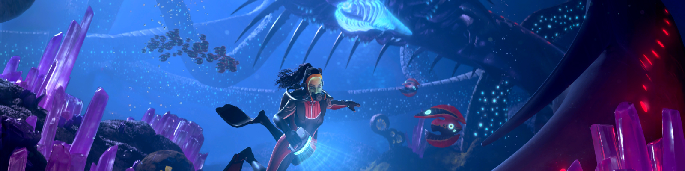

SUBNAUTICA
Subnautica is an action-adventure survival game set in an open world and played from a first-person perspective. The player is a crew member of the Aurora ship that was created by Alterra with one main objective: to build a base in the region of the star 4546 and a secondary, although not publicly revealed, to find the survivors of the Mongolian ship Degasi that fell ten years earlier on the ocean planet. unexplored 4546B. The player must explore the ocean and survive the dangers, while completing tasks to advance the plot. Players can gather resources, build tools, bases, submersibles, and interact with the planet's wildlife.